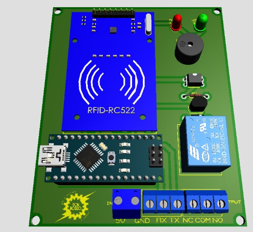
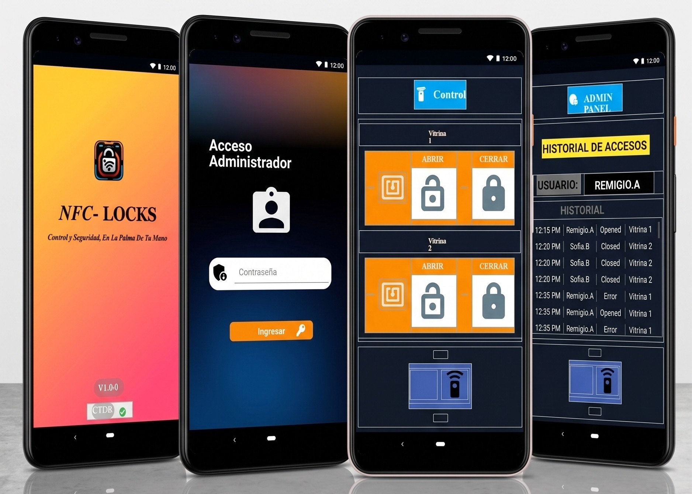
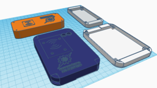
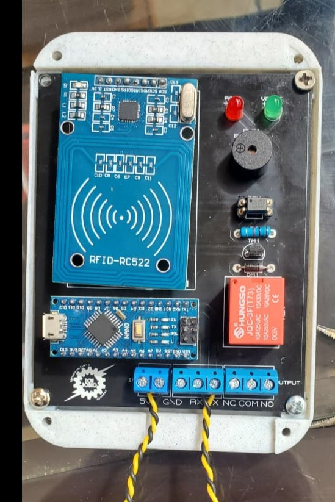

NFC Locks
Proyecto de Grado · 2024Cerraduras electrónicas con tarjetas NFC y control remoto desde una app, para proteger vitrinas de locales comerciales
Los locales comerciales pequeños que exhiben productos en vitrinas abiertas sufren pérdidas constantes por hurto, tanto de clientes como de empleados con acceso libre a los estantes. El dueño no tiene forma de saber quién manipuló una vitrina ni cuándo, y debe estar físicamente presente para sentir que sus productos están seguros.
Diseñe "NFC Locks": Una cerradura electrónica construida sobre una placa PCB propia usando Arduino Nano para las cerraduras y el módulo Wifi ESP8266 para el control remoto, esta lee una tarjeta NFC que manda una señal para abrir la cerradura, esto al detectar una tarjeta registrada. Si la tarjeta es válida, un solenoide libera la puerta ; si no lo es, la cerradura permanece bloqueada y no manda señal de apertura. Cada apertura queda registrada en la nube y se puede monitorear y controlar en tiempo real desde una app hecha en Kodular, con login de usuario, panel de administrador y estado en vivo (conectado/desconectado, abierto/cerrado) de cada vitrina. El código del Arduino y la carcasa de la placa fueron diseñados, soldados e impresos en 3D por el equipo desde cero.



